Animal nutrition and feed rations
{kind=link}
Inadequate nutrition is a major cause of low live-weight gains, infertility and low milk yields and other health issues in animals.
The following will explain the principles of animal nutrition and some examples of how to make home feed rations based on the types of feed available in major agro ecological zones.
Introduction
Livestock keeping in all its ventures is a major source of incomes all over Kenya, from the most productive to nearly desert areas, and for all livestock keepers livestock feeding and nutrition is a major concern.
Inadequate nutrition is a major cause of low live-weight gains, infertility and low milk yields and other health issues in cattle.
Also pig, chicken, dairy goat and many other livestock keepers have expressed challenges in feeding their animals optimally. The following will explain the principles of animal nutrition and some examples of how to make home feed rations based on the types of feed available in major agro ecological zones.
The feed nutrients
Animal feed needs to meet the requirements of the animal. For cattle it must contain a certain structure to keep the stomach healthy, and for all animals it must contain dry matter, various groups of nutrients, minerals and trace-elements and should not be mouldy or mixed with dirt and soil nor contain poisonous ingredients (for example pesticides or herbicides on crop residues). The composition of feeds in a ration depends on the type of animals being fed and their stage of production. Cattle and goats, being ruminants, are better equipped to digest crude fibre than pigs or chickens. Young animals need more protein than adult animals, while animals in milk need a higher protein content in the ration than non lactating animals.
Generally animals must have a ration containing:
- Energy (from carbohydrates and fats) to maintain the body and produce (milk, meat, work). The carbohydrates and fats not needed for production are converted to fat and stored in the body.
- Protein is needed for body building (growth) and maintenance as well as milk production. Without protein there would be no body weight gain nor milk production. Excess protein is converted to urea and fat
- Minerals help in body building as well as in biological regulation of growth and reproduction. They are also a major source of nutrients in milk.
- Vitamins help regulate the biological processes in the body and become a source of nutrients in milk
- Water helps all over in body building, heat regulation, biological processes as well as a large constituent of milk production as well as eggs.
Partition of feed energy
Only parts of the nutrients in feeds are available for the animal. All feeds contain energy: the gross energy (GE) that is the energy that is available when the feed is burned. For instance fresh sugarcane forage has a gross energy content of 18.2 MJ per kg of dry matter (DM). This GE is a value of the feeds itself and is not influenced by animals.
- Cattle can digest sugarcane forage for 68% (the rest is lost in the faeces): the digestible energy (DE) for cattle is 11.3 MJ/kg DM.
- Pigs are able to digest only 37% of all energy in sugarcane forage, so the digestible energy for pigs is only 6.7 MJ/kg DM, much lower than that for cattle.
From the digestible energy part cannot be used by the animal but is lost as methane gas or in urine. Especially ruminants loose part of the energy in methane gas while in non-ruminants this is a minor loss. The remaining energy is called metabolizable energy (ME).
- The ME of sugarcane forage for cattle is 9.3 and for pigs it is 5.5 MJ/kg DM.
- From the ME some heat is lost and that energy cannot be used by the animal itself. The energy that can be used by the animal is the net energy (NE). The efficiency this net energy is used for the various functions differs: for maintenance 1 kg of dry matter of sugarcane delivers 8.1 MJ, for growth the same kg of sugarcane forage delivers 8.6 MJ and for lactation it contains 6.7 MJ/kg DM.
- So the net energy of the sugarcane forage for cattle varies from 6.7 - 8.6 and for pigs it varies from 4 - 5.
- For high crude fibre forages and compared to cattle, goats use feeds with the same efficiency, camels and donkeys are less efficient, pigs are far less efficient, most poultry is far less efficient than cattle and rabbits are about as efficient as cattle.
- For low crude fiber feeds pigs are more efficient than cattle. In the scheme "Fate of feed energy within the animal" the different parts of the systems are given.
When calculating rations, the value of the feeds and the requirements of the animals must have the same system. If energy of feeds is given in metabolizable energy, the requirements of animals should be stated in ME to be able to calculate rations. In some countries the net energy (NE) system is used, in other countries the digestible energy (DE) or metabolizable energy (ME) system is used. The feed system used is mainly determined by the available information from feedstuffs and animals and the wish to be more or less precise. It is a compromise between the costs of research and analysis and the benefits of using a very sophisticated feed system. With limited information about feeds it is best to use a system based on Metabolizable Energy or on a DE system, e.g. Total Digestible Nutrient (TDN) system.
When calculating feed needs of different animals a system called Metabolisable Energy as a basis for formulating rations on the farm is used. Metabolisable energy basically means that part of the feed which the animal is able to utilize.
The unit of energy is the joule of which one million units (1 000 000 joule) is referred as Megajoule (MJ). The energy value can be given in the dry matter or in the product (as fed). For ration calculations the energy in the product is used. When comparing feeds (for example to compare prices of energy) it is more convenient to use the energy per kg of dry matter.
Basically, feed organic nutrients are required by the animals for three things: These are:
(i) use as materials for the construction of body tissues (growth and maintenance)
(ii) synthesis of products such as milk and eggs
(iii) use as sources of energy for work done. The work done include both metabolic (heat increment and maintenance) and physical e.g. walking and feeding.
| 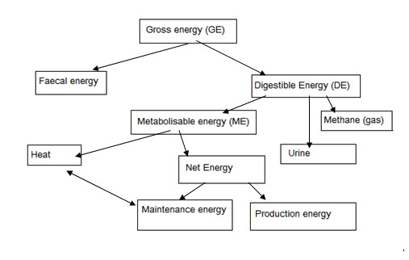 |
| Fate of feed energy within the animal |
Gross energy (GE) The feed is comprised of chemical ingredients which are broadly classified as carbohydrates, proteins, lipids and vitamins. Heat is released when organic material in such feed is burnt. For this reason, methods have been developed to measure the quantity of chemical energy present in a feed by determining the amount of heat generated from complete burning a known quantity. This is referred to as gross energy. Most of the common feeds have energy content of about 18.5 MJ/kg DM.
Digestible energy (DE) Not all the gross energy in consumed feed is available and useful to the animal. Some energy is lost from the animal though excretions: it is fixed in the feed in a way the animal cannot reach it. The digestible energy is calculated by subtraction of faecal energy from gross energy. The DE represents the energy content of the digested nutrients. From these digestible nutrients the Total Digestible Nutrients (TDN) can be calculated.
Metabolizable energy (ME) The animal further loses energy containing-substances through excretion of urine and production of gases during metabolic processes. Metabolizable energy is what remains after subtraction of energy lost from urine and combustible gases resulting from the digestible energy of a feed. Loss of energy through methane (a combustible global warming gas) can be substantial, particularly from ruminants; hence can be of serious nutritive and environmental consequence.
Heat increment (HI) The ingestion of feed by an animal is also followed by losses of energy not only as the chemical energy excreta and gases produced but also as heat. Animals are continuously producing heat and losing it to their surroundings, either directly through radiation, conduction and convection or indirectly through water evaporation from the body. The heat is generated through processes of digestion and metabolism of nutrients derived from the feed. For instance, the act of eating, which includes chewing, swallowing and secretion of saliva, requires muscular activity and this generates heat. Unless the animal is in a particularly cold environment, this heat energy is of no value to it, and must be considered, like the energy of the excreta, as a tax on the energy of the feed. Energy lost in this manner is referred to as Heat increment.
Net energy (NE) The deduction of the HI of a feed from its ME gives the Net energy, which is the energy available to the animal for useful purposes such as body maintenance and various forms of production (milk, meat, eggs, wool and labour).
Energy Feeds
Energy is the fuel that keeps all body functions working. Milk production requires a lot of energy. If energy in the ration is not enough, the animal will lose body condition and for milking cows, milk yield will drop, pregnant cows become ill after calving and the calf will usually be small in size. If there is excess energy in the ration, the animals becomes too fat. Cows that are too fat at calving usually have difficult births, often have problems with retained placenta, displaced abomasums and may suffer from milk fever and ketosis. Sources of energy are roughages and concentrate supplements fed to your animals.
Roughages form the main bulk of the dairy cow ration.
Roughages are bulky feeds that have a low energy content per unit volume (i.e. hay, straw). They can have a high moisture content (grass). Generally feedstuffs with more than 18% crude fibre and low digestibility are considered as roughages. Ruminating animals (cattle, goats, sheep) need a certain amount of crude fibre to keep a healthy stomach system. On the other hand high yielding animals may not have enough capacity to consume the amount of roughage required to meet the energy requirement due to limitation of stomach size. For this reason, supplementing roughage diets with feeds high in readily available energy is often recommended. Examples of energy sources (forages and fodders, agricultural by-products and concentrates) are shown in Tables 2 and 3. In the tables the average values of feedstuffs are given. Local conditions can cause differences in chemical composition of the same feedstuff. The values in the table can be used as guidelines when no information is available from the farmers own feeds. .
The currently recognized energy feed nutrients include:
- Simple Carbohydrates such as Glucose, Fructose, Galactose, Sucrose, Maltose and Lactose, all different types of sugar
- Complex (Carbohydrates) Polysaccharides such as
- Starch, found in roots and tubers as well as in grain,
- Hemicellulose (somewhere between sugar and cellulose chemically speaking),
- Cellulose, the principal constituent of cell walls of plants. Most abundant in more fibrous feeds, generally low in digestibility. Cattle, goats, sheep (as ruminants) and horses (with a large colon-caecum) digest cellulose fairly easily. Pigs and chicken (as mono gastric animals) do not digest cellulose very easily.
- Lignin which essentially is not digestible to animals. Found in over mature hays, straws and hulls. High lignin content in feed may reduce the digestibility of cellulose and other nutrients.
- Fats and oils. Found in seeds, grains, avocados etc. Fats contain 2.25 times as much energy per kg compared to carbohydrates, but are usually expensive to produce.
Minerals
Minerals are required in small amounts but are important components of the ration. They are essential for cows to remain healthy and for the body to function properly, for the development and maintenance of strong bones and for successful reproduction and production of milk and eggs.
Minerals are chemical elements which form important component of animal feed ingredients. They are essential in ensuring normal and proper functions of the body as well as in maintenance of good health. When an element classified as essential lacks in the diet, animals will in shorter or longer time show deficiency symptoms, which are eradicated or prevented by inclusion of this particular element in the diet. Some elements are required in relatively large amounts compared to others. For this reasons the minerals have been classified as 'macro-minerals' (required in larger amounts: grams per kg feed) and 'micro-minerals' or 'trace-minerals' (required in minute amounts; milligrams or micrograms per kg of feed).
Of the 20 elements that function in animal nutrition, carbon, hydrogen, oxygen and nitrogen are regarded as the non-mineral elements. The other 16 are referred to as the mineral elements which function in animal nutrition. Of these 7 are macro-minerals (required in fairly large amounts) and 9 are micro-minerals (required in very small or trace amounts). Micro-minerals are also sometimes called trace-minerals.
Different livestock types have different mineral requirements, which as far as possible will be described under each livestock type.
Some minerals can be stored in the animal body (liver: copper, bones: calcium) and sign of deficiencies are shown after a longer period of deficient feeding. Minerals that are not stored in the body show signs of deficiency more rapid.
- The macro-minerals are: are: Calcium (Ca), Phosphorus (P), Potassium (K), Sodium (Na), Sulphur (S), Chlorine (Cl), Magnesium (Mg).
- The micro- or trace minerals are: Iron (Fe), Iodine (I), Copper (Cu), Cobalt (Co), Fluorine (F), Manganese (Mn), Zinc (Zn), Molybdenum (Mo), Selenium (Se).
Macro-minerals
Animals require more of the macro-minerals (Calcium, Phosphorus, Magnesium, Sodium, Potassium, Chlorine, Sulphur) than the micro-minerals (Iodine, Iron, Cobalt, Copper, Manganese, Molybdenum, Zinc, Selenium). If animals do not consume enough of the macro-minerals, this will cause reduced production, infertility problems, weakness of the bone and increased incidences of non-infectious diseases. In cows insufficient Calcium supply causes milk fever. Deficiencies in micro-minerals (trace elements) can cause a variety of diseases and conditions depending on which mineral is deficient.
Cattle grazing in areas around Nakuru usually have Cobalt deficiency and may develop a wasting disease called Nakuritis. They become anemic and eventually die. The forages are deficient of mineral Cobalt because the soils naturally contain very low levels of this micro-nutrient. Special mineral supplements are available for cattle in such areas. Too much of the micro-minerals can cause poisoning.
Calcium and Phosphorus are of particular importance when formulating rations. Legumes tend to have more Calcium and Phosphorus than grasses. Grains are low in Calcium. Young dark green forage tends to have more minerals than old, dry and yellow forages. Most tropical forages are low in Phosphorus.
Extra Calcium and Phosphorus usually need to be provided in the ration over and above that naturally present in the feed and mineral mix, especially for high yielding animals. Tables 2 and 3 show examples of sources of mineral salts (Forages and fodders, agricultural by-products, concentrates and minerals).
- Salt: (Sodium chloride) deficiency develops slow (weeks) but causes unthrifty appearance and low performance. Provision of ad lib salt licks are recommended. Plants tend to be low in both sodium and chlorine. It is therefore an important practice to give common salt to herbivores such as dairy cattle in order to prevent deficiency symptoms. Feeding diets deficient in salt may not show immediate symptoms, but chronic deficiency dairy cattle diets has been shown to lead to low appetite, low milk production and loss of weight. The addition of salt in the diet usually provide immediate cure. Fish meal, Guinea grass, Rhodes grass, Sweet potato vines, Rice and Oat straw and Sugarcane molasses are good sources for sodium.
- Calcium: Calcium is the most abundant mineral in the animal body. It is the most important constituent of the skeleton (bones) and teeth. Calcium also plays important roles in the activities of enzymes and hormones, which catalyse and/or balance the body metabolic processes. Agricultural lime, fish meal, milk, crushed shells, marble dust, some seaweed and green leafy forages, especially legumes, are good sources of calcium. Calcium tend to be low in old, dry and yellowing forages.
In older (multiparous) dairy cows, a condition known as 'milk fever' (parturient paresis) commonly occurs shortly after calving caused by lack of available calcium. It is characterized by a lowering of the blood calcium level (hypocalcaemia), muscular spasms, and in extreme cases paralysis and unconsciousness.
Deficiency symptoms: a) rickets in young stock. Joints become enlarged. Bones become soft and deformed. Condition may be corrected in early stages with calcium feeding. b) Osteomalacia or osteoporosis in older animals. Bones become porous and weak. Condition may be corrected by feeding calcium if bones do not break.Examples are known of cows fed too little calcium breaking their backs during mating
- Phosphorus: is needed for bone and teeth formation, building body tissue (growth of animals), milk and egg production. Signs of phosphorous deficiency include animals eating soil, chewing on non feed objects, slow or poor appetite, slow gain of bodyweight, low milk or egg production.Low dietary intakes of phosphorus have also been associated with poor fertility, apparent dysfunction of the ovaries causing inhibition, depression or irregular oestrus.
Sources of Phosphorous: Bone meal, Rock phosphate, Superphosphates such as TSP etc. Also many improved salt licks contain phosphorus. African locust bean, pod pulp, Cotton seed meal, Wheat, bran, Rice bran and Sunflower cake are a good source of Phosphorous, but hays and straws have very low phosphorous content.
- Magnesium: is needed in proper functioning of the nervous system, carbohydrate metabolism and enzyme systems.
Deficiencies: a) Hypermagnesaemia also called grass tetany, grass staggers and wheat poisoning can occur when animals are grazing on young fresh grass or wheat with high protein and potassium content and with very little content of magnesium.
Symptoms are hyper excitability, paralyse and frequent death. More common in Europe than in Africa. Prevention: use animal salts containing magnesium especially when animals are grazing on new young grass or grains such as oats. Banana, stalks, Cassava, foliage, Pawpaw, leaves, Sweet potato vines, Cotton seed meal, soybean and Cocoa pods are good courses of magnesium. In Kenya magnesium deficiency hardly occurs, probably because of the available feeds.
- Sulphur: Sulphur requirements of cattle and sheep are around 0.1-0.2% of ration dry matter. For non-ruminants sulphur should be in the form of sulfur-containing proteins. A deficiency of sulphur will express itself as a protein deficiency, general unthriftiness and poor performance. Good sources of sulphur are Lucerne, Wheat- and Rice bran and Sunflower cake.
Micro-minerals
- Iron: Necessary for blood and some enzyme formation. The precise minimum requirements have not been determined for various classes of livestock, but 80mg of iron per kg of diet is more than adequate for most animals. Deficiencies are most often found in young pigs (other animals much less sensitive): Laboured breathing, flappy wrinkled skin, oedema of head and shoulders, pale eyelids, ears and nose. Prevention/cure: A few drops of ferrous sulphate or similar daily during the first 3-4 weeks. Salt licks containing iron. Cattle fed with roughages iron will be sufficient in general.
- Iodine: Needed for the production of Thyroxin in the thyroid gland. A level of 0.25 mg/kg air dried diet is considered adequate for most classes of livestock. Dairy cows should be provided with 0.5 mg iodine/kg dry matter feed.
Deficiency symptoms: Goiter at birth or soon after, Hairlessness at birth, infected navels, dead or weak at birth. Prevention: mix normal iodized salt (table salt) into the salt licks of the livestock.
- Cobalt: Needed in vitamin synthesis. For cattle and sheep, feed containing from 0.05-0.10 mg of cobalt/kg feed prevents any cobalt deficiency. For pigs cobalt is only needed as part of Vit B12. Several areas in Kenya have cobalt deficient soils, producing feed deficient in cobalt.particularly around Nakuru and Naivasha due to the absence of this element in the soils, leading to the absence in the pastures. A feed analysis will show whether feed in your area is cobalt deficient. Consult your livestock officer.
Deficiency symptoms are simply those of malnutrition: poor appetite, unthriftiness, weakness, anaemia, decreased fertility, slow growth and decreased milk and wool production. There are number of disorders due to cobalt deficiency characterized by emaciation (wasting disease or Nakuritis), pining, anaemia and listlessness. Although excess cobalt can be toxic to animals, there is a wide margin of safety level. Thus cobalt toxicity is generally unlikely. Prevention and cure: Where cobalt deficiency is diagnosed, 12.5g of any cobalt salt, such as cobalt chloride, cobalt sulphate or cobalt carbonate can be mixed with 100 kg of normal cattle salt. Barley, grain, Lucerne and Sorghum are relatively high in cobalt.
- Copper: needed for blood and hair production as well as in the enzyme system. Where diets are not high in Molybdenum and/or sulphate the following levels of copper per kilo of diet dry matter have been found adequate:
- Dairy cattle: 10 mg/kg
- Beef cattle and sheep: 4-5 mg/kg
- Pigs: 6 mg/kg
- Horses: 5-8 mg/kg
High levels of Molybdenum and/or sulphate create unusable salts and may increase the copper requirements 2-3 times. Many areas in Kenya have copper deficiency in the soils and produce feed deficient in copper. Deficiency symptoms are not specific and may include any of the following: Bleaching of hair in cattle especially around the eyes, abnormal wool growth in sheep, muscular incoordination, weakness at birth, anaemia, severe diarrhoea. Prevention and cure: Supplementation of livestock with copper in copper deficient areas is essential. This can be done by using trace mineralized salt containing from 0.25-0.50% copper sulphate. Pigs may be fed up to maximum 250 g copper/kg dry feed. More than 100 mg copper per kilo dry matter may be toxic to cattle and over 50 mg/kg will be toxic for sheep. It is also possible to repair your grazing areas for especially ruminants by upgrading the soil content of copper according to soil analysis recommendations. Generally grass and fodder deficient in copper have yellow or burnt leaf tips and low rates of production. Soybean, aerial parts, Cocoa pods and hulls, Cassava, foliage silage, Cowpea, aerial parts, Sunflower, cake, Maize Stover, Coffee hulls Cotton seed meal, Barley straw and Wheat bran can be sources of copper.
- Fluorine: necessary for healthy teeth, but excess may weaken and stain the teeth. In Kenya fluorine deficiencies are not common, but drinking water especially from boreholes often contain very high levels of fluorine. If the levels of fluorine are too high water can be filtered through a filter containing burnt bones, which will absorb most of the fluorine. This is more practical for human water consumption than for livestock. In most parts of Kenya highlands there is excess of fluorides in surface water and ground water. Harvesting rainwater for domestic use can ameliorate the problem. Water can also be treated to lower the fluoride level. The best advice for water treatment for excessive fluorine can be obtained from the Catholic Diocese in Nakuru.
- Manganese: influences oestrus, ovulation, foetal development, udder development, milk production, growth and skeletal development. Requirements:
- Dairy cattle: 40 mg/kg of dry matter feed
- Beef cattle and sheep: 5-20 mg per kg dry matter feed
- Pigs: 10-20 mg/kg dry matter feed.
Deficiency symptoms noted from areas deficient in soil manganese include: delayed oestrus, reduced ovulation, abortions, resorptions, deformed young, "knuckle over" in calves, poor growth. Supplementation is easily done with trace mineralized salts containing 0.25% manganese. Rice products, Guinea grass, Kenya sheep grass, Sweet potato vines, Sorghum straw, Wheat bran, Rhodes grass, Kikuyu grass and Napier grass van be rich in manganese.
- Molybdenum: Important in poultry as it stimulates uric acid formation, and in ruminants stimulates action of rumen organisms. Molybdenum deficiencies have only been observed in poultry in special cases. Molybdenum supplementation is normally not recommended in livestock production. High amounts limit copper availability. Soybean cake, Rice bran, Lucerne, Wheat bran and Sunflower cake can be high in molybdenum.
- Selenium: works in vitamin E absorption and utilization.
Requirements: about 0.1 mg or less per kg dry feed. Deficiency symptoms include: Nutritional muscular dystrophy in lambs and calves, retained placenta in cows, heart failure, paralysis, poor growth, low fertility, liver necrosis, pancreatic fibrosis in chicks. Many areas in Kenya are known to have selenium deficiency of the soils. If selenium deficiency is expected, a soil or feed sample can be sent to any of the major laboratories for analysis. Supplementation must be done very carefully as selenium in too large quantities is poisonous and causes the same problems as selenium deficiency. 1 gram Selenium in the form of sodium selenite can be added to 10 kg dry feed in deficient areas (=10g or 2 teaspoons per 100 kg feed- really not much). Fish meal, Wheat bran, Sorghum grain, Sunflower cake, Lucerne, Wheat grain, Soybean hulls and Rice bran are good sources of selenium.
- Zinc: promotes growth and thriftiness. Promotes wound healing, related to hair and hoofs/claws and wool growth. Deficiencies mostly found in pigs fed on concrete floors. Deficiency symptoms include: general unthriftiness, poor growth, unhealthy looking hair, skin and wool, slow wound healing. Pigs can be supplemented with 50 mg of zinc per kg of dry feed or as trace mineralized salt. Good sources of zinc can be: Soybean, aerial parts, Sugarcane forage, Sunflower heads, Banana, stalks, Neem tree, leaves, Mango leaves, Jackfruit leaves, Maize bran and Fish meal.
A well balanced mineral salt mixture adjusted to local conditions is the easiest way to ensure good mineral balance in animal feeds. It is not common to have feeds analysed for minerals and trace-elements because of the high price of analysing. Free ranging livestock do get reasonable adequate quantities from nature or from sites with natural minerals licks. Commercial mineral mixtures are available and are highly recommended for high yielding cows and intensively raised chickens and pigs.
Mineral, Energy and Protein content of the most important feeds in Kenya
Tables 1 and 2 give mineral content of the most important feeds in Kenya (Jack Ouda, KARI NARL 2009)
| 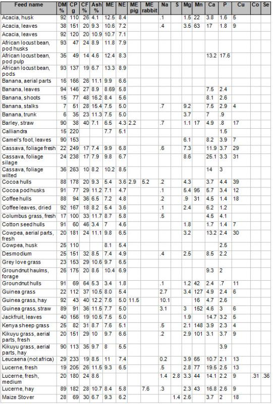 |
| 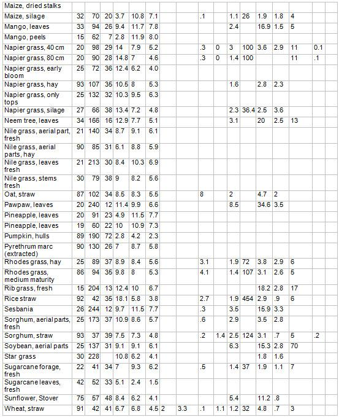 |
Table 2: Quality of some commonly available concentrates and agro-industrial by-products in Kenya
| 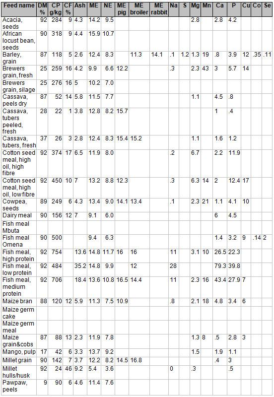 |
| 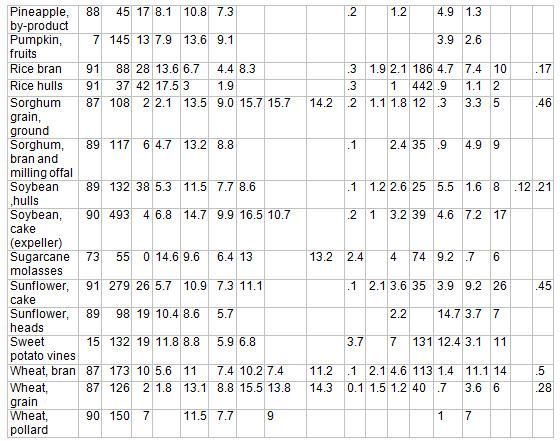 |
Vitamins
Vitamins in ruminant feeding
While all the different vitamins are essential for all livestock, under most conditions only vitamin A needs to be given attention in ruminant feeding. ss-carotene and/or Vit A can be stored in the liver and body tissues during periods of high intake and used during periods of low intake. Vitamin A is found in green plants, carrots and other feed stuff.
Vitamin B is usually synthesized in the rumen of ruminants.For other animals it is beneficial to include small amounts of feed from animal origin to supply vitamin B12, as this vitamin is only found in animal products. Vitamin C will most of the time be enough in the green roughages eaten by ruminants , but non-ruminants will need access to green vegetation or vegetables to cover their vitamin C needs. Vitamin D gets produced when animals are exposed to direct sunlight, for which reason it is always advisable to give livestock a chance to spend time in the sun.
Vitamin A deficiencies in ruminants may include:
- Reduced feed intake
- Slow weight gains
- Night blindness
- Swollen hocks, knees, and brisket
- Total blindness
- Diarrhoea
- Muscular incoordination
- Staggering gait
- Reduced sexual activity
- Low fertility in bulls
- Poor conception rates
- Abortion in cows
For this reason it is advisable to supplement ruminant feed with Vitamin A (or carrots if available) during periods where little green fodder is available.
Vitamins in pig nutrition
- Vitamin A: Add 2-3 % good quality Lucerne meal or similar (such as dried crushed comfrey or amaranth leaves) to the normal pig rations. Another alternative can again be carrots if cheap enough and available.
- Vitamin D: Try to expose the pigs to sunlight. If this is not possible addition of Vitamin D supplementation is needed.
- Riboflavin: This is found in Lucerne meal, green plants, fish meal or milk products. If none of these are used in the pig feed, supplementation with riboflavin is recommended.
- Niacin: As most feeds are short of this vitamin, supplementation is recommended. Some good sources of Niacin include: rice and wheat bran, sunflower meal, brewer's yeast and fish meal.
- Pantothenic Acid: Supplementation recommended with for example rice or wheat bran, rice polishing, sunflower meal, Lucerne meal, fish- or peanut meal, brewer's yeast.
- Vitamin B12: This vitamin is only found in animal products such as fish meal, blood meal, or for open range pigs and poultry: insects, grubs, etc. If your pigs are mostly fed on soya meal for their protein, a small addition of fishmeal will be beneficial.
- Choline: Is usually sufficient in pig rations.
- Vitamin E: Effective vitamin E utilization is dependent on adequate selenium, and selenium is sometimes deficient in feed from some areas. If selenium content of feed is a problem also the production of vitamin E will be a problem. Ask advice on Vitamin E from your livestock nutritionist.
The values in Table 3 for vitamin content of feed stuffs, should only be used as guidelines, as vitamin content depends on weather conditions where the crops are grown. However it can be seen which crops are able to produce the various essential vitamins.
Table 3: Vitamin content of some feeds - American values (From Cullison 1987) as Kenya values are not available. It is assumed that similar products in Africa do not differ substantially in Vitamin composition, so the values indicated can be used when choosing which ingredients to balance your feeds from.
Alfalfa = Lucerne, Copra meal = coconut meal, Corn = Maize. It is often convenient to supplement livestock with vitamin mineral mixtures in form of lick or when composing feed formula to include a vitamin mineral premix. These vitamin mineral premixes are generally available.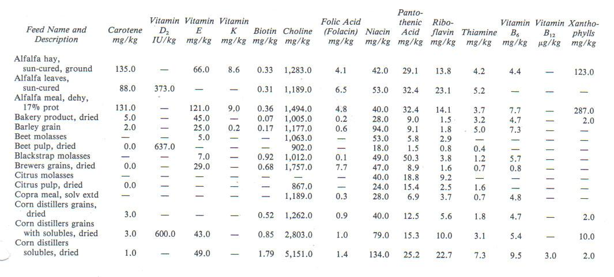 Essential amino acids in some important feeds 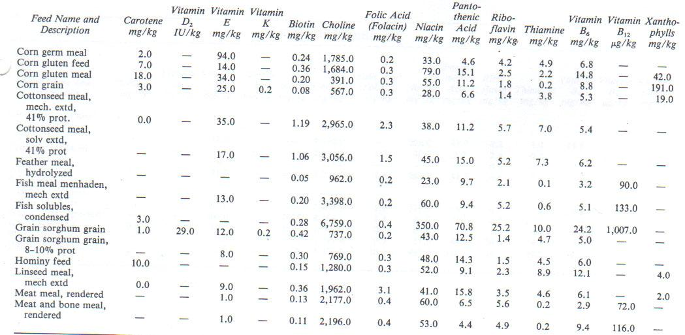 Essential amino acids in some important feeds 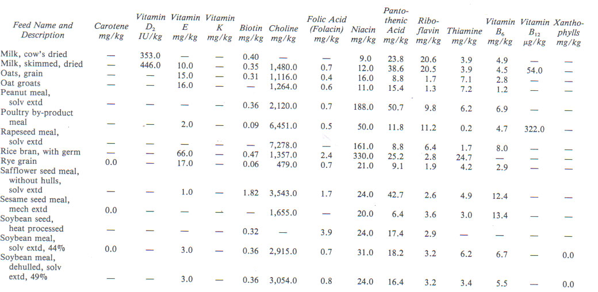 Essential amino acids in some important feeds 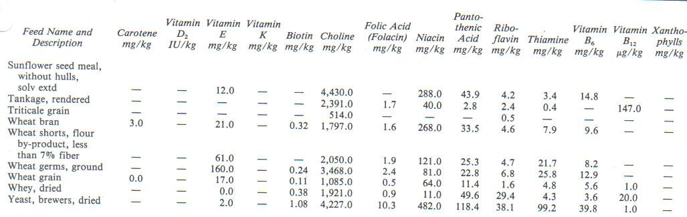 Essential amino acids in some important feeds
Fibre requirements and Water
Fibre Requirements
Domestic livestock require varying amounts of dietary fibre to keep them healthy and keep the digestive system active. The more fibrous feed stuffs are, the lower the energy and protein content and the more energy it takes to digest the feed. It is tempting to feed fast growing animals such as broilers and piglets a diet low in fibre in order to be able to eat enough calories and protein for fast growth. In general those feed stuffs are more expensive, and could results in lower quality meat production. Animals should always have enough fibres to keep them healthy and keep them occupied to maintain or create a system in which animals have high resistance. Strong animals in healthy and hygienic surroundings are less susceptible for diseases and don't need preventive antibiotics. In organic system preventive antibiotics are not allowed. Such low fibre diets makes the animals susceptible to diseases. Addition of antibiotics in animal feed has again led to traces of antibiotics in their meat, and the development of antibiotic resistant human disease bacteria, as humans are the ultimate consumers.
For animals to lead a healthy life, they must consume enough dietary fibre to keep the stomach/ rumen healthy and functioning. However there are limits; too high content of fibre (lignin, dry cellulose) will fill the stomach without bringing enough nutrients along. Various livestock species have different adaptabilities to high fibre diets. In a diet it will be a compromise between the energy needs of an animal and the possibility to meet the needs: the higher the production, the higher the energy density of the ration should be.
Water
Water is a necessary compound of plants and animals. Growing plants contain 70-80% water and animals contain 70-90% water. Water has several important functions in the animal body such as regulation of body temperature, carrier of nutrients, regulation of tissue structure etc. Water is needed to make saliva for swallowing feed and for chewing the cud, for feed to be digested, to cool the body when it is too hot and to remove waste materials from the body in the urine and faeces. In addition a milking cow (and also suckling sows, camels and donkeys) needs water for milk production. Lack of water will kill an animal faster than lack of any other nutrient. Lack of sufficient amounts of water or provision of poor quality water will seriously reduce animal performance.
Minimum Space and Water Consuption
The normal range of water consumption for adult animals has been summarized as below:
| Livestock type | Water consumption in litres/day |
| Camels | every 5-8 days as much as they can drink (up to 100 liter or one third of body weight) daily about 15-30 litres |
| Beef cattle | 35-60 per head |
| Dairy cattle | 30-80 per head |
| Horses | 24-36 per head |
| Donkeys/mules | Twice a day as much as they can drink (10-25) |
| Pigs | 15-25 per head |
| Sheep and goats | 5-20 per head |
| Chickens | 40-50 per 100 birds = 0.5 litre per bird |
| Turkeys | 40-75 per 100 birds = 0.75 litre per bird |
| Rabbit | 50-150 Millilitre (=0.1 litre) water per kilogram bodyweight (small cup) |
Water should be available at all times (except for camels, they can do with water every 5-8 days) and be clean and fresh.
Remember that young animals also need water! Even when they are milk fed, it is not always fulfilling their needs for liquids, especially not if active and if it is warm or hot and dry, or maybe even windy.
Cattle:
Ideally, water should be available to dairy cattle at all times.
Rule of thumb: If this is not possible, a rule of thumb is to supply 1 litre of water for every 10 kg of live-weight of the cow plus 1.5 litres of water per 1 litre of milk produced. So a cow of 500 kg live weight and a milk yield of 15 kg a day needs 50 + 22.5 = 72.5 litres of water every day.
Dairy cows
| 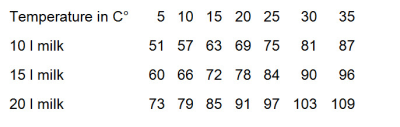 |
The amount of water dairy cattle will drink is influenced by the quantity of dry matter ingested a factor of the dry matter content of the diet, the chemical composition of the diet, water quality, environmental temperatures and physiological state of the animal.
Table 4b shows water requirements for dairy cows at different ambient temperatures based on dry matter intake requirements. When fresh grass is fed, with a dry matter content of 25%, every 10 kg of grass contain 7,5 kg of water. When hay is fed, with a dry matter content of 80%, every 10 kg of hay contains only 2 kg of water.
Table 4b: Water requirements for dairy cows dependent on ambient temperature, dry matter intake and milk yield
| 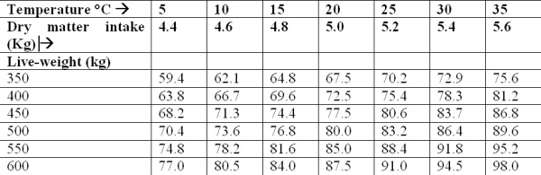 |
Feed additives
A feed additive is defined as a feed ingredient of non-nutritive nature that stimulates growth or other type of performance or improves the efficiency of feed utilization or that may be beneficial in some manner to the health or metabolism of the animal. Examples of feed additives for dairy cattle are anti-helminthic (Dewormers), anti-bloat agents, rumen buffers (NaHCO3, MgO), flavouring agents (Molasses), rumen microbes for fibre digestion (Yea sac) and growth promoters or hormone-like substances. For feed manufacturers it is now common practice to add yea sac and rumen buffers to commercial dairy concentrate. Also some farmers who offer total mixed rations (TMR) to their cattle use these feed additives. On small holder farms feed additives are not commonly added to dairy cattle rations. In organic agriculture these substances are not approved as management tools.
Feed quality
Physical indicators of feed quality
The physical nature of the feeds can pose serious limitations to efficient utilization of a feed or a ration comprised of several feed resources. However, the influence of physical attributes of feeds on quality is often ignored. Some of the physical aspects that can limit the quality and utilization of feeds in dairy production are briefly discussed:
| 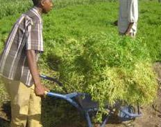 |
| Vetch (Vicia villosis) harvesting at the right stage of growth |
| (c) T. P. Lanyasunya, Kenya
|
The nutritive quality of forages varies as they grow towards maturity. Consideration of the stage at which both biomass yield and nutrient content are optimal is therefore important. After attainment of maturity, the forages generally depreciate in nutritive value. This is mostly due to increase fibrous material, particularly lignin. For many forages, the leaves die off systemically after attainment of maturity, and this reduces photosynthetic activities. As a result, there will be reduced accumulation of nutrients: the yield does not increase anymore. These factors are important to be considered e.g. when harvesting forage for conservation as hay. For instance, when making hay from grass (e.g. Rhodes grass) and legumes (e.g. Lucerne) it is generally advisable to cut at the onset of flowering up to the time of 50% flowering. For a vegetatively propagated forage such as Napier grass, cutting height is the most important physical consideration for quality. Studies have shown that optimum harvesting height for Napier grass range between 50-60 cm (dry season) and 130-140 (rainy season). Another disadvantage of a mature stage and dying leaves is that the leaves fall off and are lost from the roughage. The leaves in general contain most easy available feeding value.
| 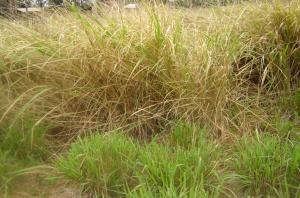 |
| Grass exhibiting difference in quality due to the impact of texture |
| (c) JO Ouda, KARI, Kenya |
The physical/textural changes which occur as forages grow can impact on palatability, intake and animal digestive physiology. For instance, high intake of succulent young forages (e.g. Lucerne, vetch, clover and Comelina spp) may cause bloat. At young stage the dry matter (DM) content of some forages can be very low (e.g. sweet-potato vines and Napier grass), and this can limit the adequate intake of dry matter to support the desired level of production. The palatability can be compromised as the forages age because of increase in toughness and crude fibre. This can further complicate issues if some species and classes of livestock e.g. young ones are unable to consume fibrous old and tough forages or parts of.
It is important to have knowledge of the nutritive attributes of the various morphological components of the individual forages. In fodder crops, the leaf is in most cases the most nutritive component, hence the need to consider the utilization of a forage when the biomass yield and leaf:stem ratio are optimal.
Where the cattle are stall fed with chopped roughage, the particle size may play an important role in selection, intake and digestibility. For instance, the chop length of ensiled maize stovers have been shown to influence the selection where leafy parts are consumed more and the overall intake is reduced with increase in chop length. Also, where different feed resources are to be mixed, the particle size must be considered to enable homogeneity in mixing.
Some ingredients necessary in the diets may not be in appropriate physical/textural form for cattle intake. Generally, cattle do not prefer powdery or finely processed feeds. Also, feed resources like molasses (semi-liquid) need to be mixed appropriately with a carrier feed. Some feed additives or supplements are better provided in pellet or lick block forms e.g. calf pellets and mineral licks. It prevents selective intake.
Generally, feeds have their own typical appearance, which the farmers are or should be familiar with. The appearance can be an important attraction to both farmers and animals. Deviation from the typical appearance should be taken seriously as this may have implication on quality. The colour of specific feed resources can be good indicators for the quality of the feed. Thus feed users need to know the typical colour of feeds so that when there is deviation from the norm, precaution can be observed. For most fresh forages, green colour indicates good quality. For instance, greenness may depict good growing conditions, hence abundance of nutrients. It may also indicate absence of diseases, pests and parasites. Appropriate colour can be used by farmers to judge the stage of harvesting. In concentrates and processed feeds it is more difficult to judge the quality on the colour. Whole grains on the contrary can be judges well on colour and shine.
| 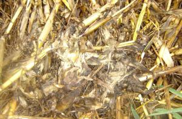 |
| Mould infested maize stovers as a result of poor conservation practice. |
| (c) JO Ouda, Kenya |
Presence of visible undesirable objects is also a good pointer to poor quality. The foreign bodies may include soil, pieces of glass, polythene, nails and metals and wood particles or rodent faeces. Visual inspection of feeds should not be neglected, because this can lead to harmful or at worse fatal consequences for the animals being fed. Be sure that there are no poisonous plants or parts included in the feed and no residues of pesticides or herbicides.
| 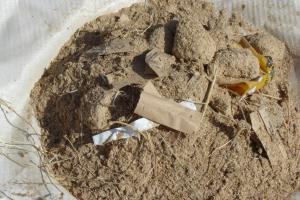 |
| Dairy meal contaminated with foreign objects. |
| (c) JO Ouda, Kenya |
One of the commonest feature of dairy cattle feeding in Kenya is variability of type and nature of roughage feed. This is due of fodder inadequacy and this has implications on acceptability and also utilization due to its effect on rumen microbe composition. It takes time for the rumen microbe composition to stabilize with change of diet and consequently digestibility and utilization of the feed. br]
Formulation of balanced dairy cattle rations
Inadequate nutrition is a major cause of low live-weight gains, infertility and low milk yields in dairy cattle. About 50-70 % of cost of dairy production is made up of cost of feeds. It is important to use the available feeds in a diet that meets the needs of the cattle in the different stages of production.
| 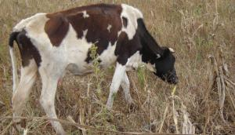 |
| Poorly nourished dairy cow |
| (c) JO Ouda, KARI, Kenya |
Good dairy cattle feeding practices can be implemented with due regard to different nutrient requirements for the various classes of dairy stock in order to avoid either overfeeding or underfeeding of the dairy cattle and hence wastage of scarce feed resources. Balanced dairy cattle rations can be formulated using various methods, A simple calculation of the main ingredients and estimating the minerals and vitamins content or more accurate calculations using different models for reliable rations. For smallholder farmers the sophisticated method will not be applicable because of lack of reliable chemical composition of the feed and complicated calculations. If feed specifics are available and precise rations are wanted, the assistance of the local livestock Production Officer could be of help in ration calculation.
Dairy cattle feed requirements
Dairy cattle feed requirements depend very much on their weight and stage of production. Whereas most farmers do not have access to weighing scales that can weigh animals, a system has been developed whereby the weight can be determined by chest measurements using a simple measuring tape (weigh band) available everywhere. The weigh band is placed around the chest a hand's breadth behind the front legs and not too tight.
The amount of feed which will provide adequate nutrients to animals will depend on their body size (live-weight). Figure 1 and 2 below give data which can be used by farmers to estimate live-weight of their cattle from girth measurements. For example: a calf with a chest girth of 61 cm will have a weight of about 31 kg, a cow with a chest girth of 188 cm will weigh about 550 kg.
| 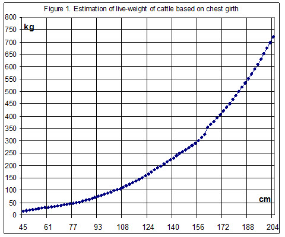 |
| Figure 1. Estimation of live-weight of cattle based on chest girth |
| 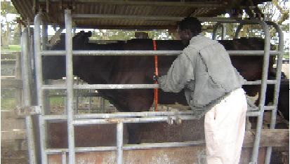 |
| Animal nutrition and feed rations |
| (c) Lanyasunya et al, KARI, Kenya |
| 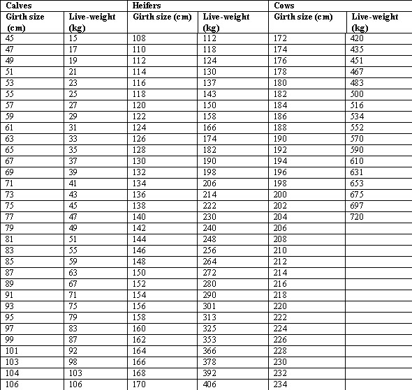 |
| Figure 2: Estimation of live-weight of dairy cattle using chest girth measurements |
Maximum dry matter intake
Animal feedstuff can be divided into two major components namely dry matter and water. The dry matter component consists of organic and inorganic matter. The organic matter consists of carbohydrates (source of energy), lipids and fats (source of energy), protein and vitamins. The inorganic matter is the source of macro- and micro-minerals. Since all nutrients are contained in the dry matter the animal must consume this portion in adequate amounts to obtain the required nutrients.
With feeds low in energy there is a risk that the intake capacity of the animals is too small to consume enough nutrients to meet the requirements for maintenance and production. Low energy feeds might be feeds with high moisture content (low dry matter) or feeds with high fibre content (low energy) or a combination. The maximum dry mater intake is about 3 - 3.5% of a cows live weight and can be estimated with the formula kg Dry mater/cow/day = 0.025*live-weight + 0.1*kg milk.
| 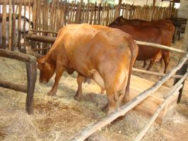 |
| Table 5: Dairy cattle under stall feeding; feed intake must adequately supply desired nutrients. |
| (c) JO Ouda, KARI, Kenya |
Table 5 shows the maximum dry matter intake by dairy cattle of various live-weights. The intake capacity increases with live-weight and milk production (in the table kg milk standardized at 4% butterfat).
| Cow live-weight (kg) | ||||||
| Milk yield (4% Butter-fat) | 350 | 400 | 450 | 500 | 550 | 600 |
| 5 | 10.0 | 10.5 | 11.0 | 11.5 | 12.0 | 12.5 |
| 10 | 10.5 | 11.0 | 11.5 | 12.0 | 12.5 | 13.0 |
| 15 | 12.0 | 13.0 | 13.5 | 14.0 | 14.5 | 15.5 |
| 20 | 13.5 | 14.5 | 15.5 | 16.0 | 17.0 | 17.5 |
| 25 | 15.0 | 16.0 | 17.0 | 17.5 | 18.5 | 19.5 |
| 30 | 16.5 | 17.5 | 19.0 | 19.5 | 20.5 | 21.0 |
Nutrient requirements for maintenance and milk production
The nutrient requirements for maintenance of animals are influenced by their live-weight, activity (e.g. walking long distance) and environmental temperature (too cold or too hot). Table 6 shows nutrient requirements for maintenance of dairy cattle of various live-weights (NRC, 1988. Dairying in KwaZulu-Natal, 1995 ). Dry matter intake is calculated with Fuentes-Pila (2003) and NRC (2001).
Table 6: Daily nutrient requirements for a dairy cow of a certain live weight and a certain milk production
| 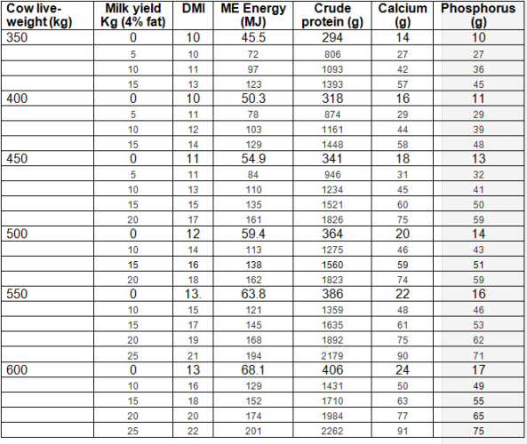 |
The amount of nutrients required by an animal is equal to the nutrients in the tissue gained. Nutrients concentrations in deposited tissue are influenced by the animal rate of weight gain and the stage of growth or live-weight. The nutrients required for growth by dairy cattle of various live-weights are given in Table 7 (NRC, 2001).
| 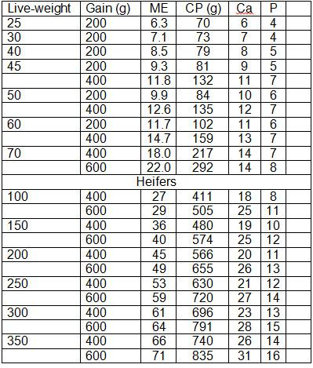 |
When feeding a dairy cow the aim should be to maximize milk yield by meeting cow's feed requirements. Requirements for milk production will depend on the amount of milk produced by the cow, energy content of milk which is indicated by fat content (the higher the fat content the higher the energy required).
Table 8: Nutrient requirements for production of 1 kg of milk of various butter fat contents
| Milk fat (%) | ME Energy (MJ) | Crude protein (g) | Calcium (g) | Phosphorus (g) |
| 3.0 | 4.5 | 78 | 2.7 | 1.7 |
| 3.5 | 4.8 | 84 | 3.0 | 1.8 |
| 4.0 | 5.2 | 90 | 3.2 | 2.0 |
| 4.5 | 5.5 | 96 | 3.5 | 2.1 |
| 5.0 | 5.9 | 101 | 3.7 | 2.3 |
| 5.5 | 6.2 | 107 | 3.9 | 2.4 |
In addition to nutrient requirements for milk production nutrients will also be required to cater for other functions such as reproduction (pregnant cows require more to cater for growth of calf) and growth rate if she is not mature (in case of first calf cows).
Table 1 shows that the energy required for the production of 1 kg of milk can be met by amongst others 1 kg of dry matter of coffee hulls, napier grass early bloom, star grass or straw of rice, barley or wheat.
Table 9. Requirements of minerals, trace-elements and main vitamins for different categories of cattle.
| 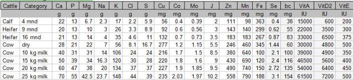 |
| Table 9. Requirements of minerals, trace-elements and main vitamins for different categories of cattle. |
As mentioned before, in generally rations with roughages for cattle will be low in copper, selenium and cobalt.
The cheapest feed for milk production is good quality roughage. However, quality of roughage fed to dairy cattle is usually low resulting in sub-optimal levels of production. Further increase in production can therefore be achieved by the use of supplements. Among the factors influencing the quantities of roughage and supplements offered are their quality and level of production of dairy cattle. Table 10 shows simple guidelines on proportions of basal diet and supplements depending on levels of milk production in dairy cattle.
Table 10: Proportion of basal diet and supplements in dairy cattle rations
| Milk yield (kg/day) | Basal diet DM (%) | Supplement DM (%) |
| 10-14 | 70 | 30 |
| 15-19 | 60 | 40 |
| 20-24 | 50 | 50 |
| 25 and more | 40 | 60 |
Ration formulation guidelines
The feeds in rations fed to dairy cattle either originate from the farm or are purchased. In order to minimize feed wastage and to overcome the problem of low levels of production, feeds need to be efficiently utilized by the animal. A cow fed on balanced ration will utilize the feed more efficiently and hence it production will be better than a cow fed on imbalanced rations. Feed rations that are offered to dairy cows are considered balanced if they provide adequate nutrients (Carbohydrates, protein and minerals) to meet the animal requirements for maintenance, reproduction, growth and milk production.
For ration calculation the composition of the feed must be available and the requirements of the animal must be known. The composition of the farms own feed will not be available from all separate feeds. Tables1 and 2 above give an overview of the composition of feedstuffs used in Kenya: the values can be used in ration calculations. In table 6 the mean requirements for dairy cattle are mentioned as a guideline: in different weather conditions and for instance in diseased animals requirements can be slightly different.
The simple procedure to calculate rations is chosen so that all farmers are able to calculate their own dairy rations. Using average composition data in this simple calculation gives a good idea where the ration needs compensation.
If the following information is provided:
- A cow weighing 450 kg and producing 20 kg/day of milk (4 % butter fat)
- Feeds available:
- Napier grass, young: 7.9 Mj ME and 98 gram CP per kg DM
- dairy meal: 9.1 Mj ME and 156 gram CP per kg DM
- Maclick super:
How much of the Napier, dairy meal and minerals will meet the cows requirements.
STEP 1
From table 5 estimate maximum dry matter intake for a 450 kg cow producing 20 kg of milk (4 % butter fat) = 17 kg. The cow needs 161 Mj ME and 1826 g crude protein (and 75 g Calcium and 59 g Phosphor).
STEP 1a. Calculate whether it is possible to feed the cow with napier grass as the sole feed. Divide the ME requirement of the cow by the ME content of the napier grass: 161 / 7.9 = 20.4 kg DM of napier grass. That is far more than the maximum dry matter intake capacity of the cow. That shows that with napier grass as sole feed the cow cannot eat enough to produce 20 kg of milk. STEP 2
From table 6 estimate proportions of Napier and dairy meal for a cow producing 20 kg/ day of milk Napier grass = 17*50/100 = 8.5 kg DM and the other half of the ration is Dairy meal = also 8.5 kg DM.
STEP 3
From tables 1 and 2 estimate nutrients supplied by the feedstuffs and from table 6 estimate nutrient requirements by a 450 kg cow producing 20 kg/ day of milk (4 % butter fat)
| 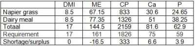 |
| Nutrients supplied by feeds and requirements to produce 20 kg/day of milk |
There is a shortage of 16.5 Mj ME and a surplus of protein. According to table 811 does the energy shortage correspond with 3 kg of milk. To close the gap to 20 kg of milk, the cow needs more energy rich feed while the protein content can be lower; for example cassava peels. By replacing 3 kg of dairy meal by cassava peels, energy and protein get more in balance with the requirements of the cow. Whether the dairy meal will be replaced by an energy rich feed depends on the price of the feed stuffs and the price of the extra milk produced.
STEP 4
Estimate the amount of feed to be fed to the cow per day. The ration contains 8.5 kg of dry matter from Napier grass. Fresh Napier grass has a dry matter content of 20%, or 200 g/kg. The cow should be fed 8.5*1000/200 = 42.5 kg fresh Napier grass. If 5 % of the grass is wasted (not eaten by the cow) she should be provided with 42.5 *1.05) = 45 kg of fresh Napier grass. Dairy meal with a dry matter content of 90% has to be provided 8.5 *1.10 = 9.3 kg. Calcium and phosphor are sufficient.
Information Sources
- Cullison, A.E. and Lowrey, R.S. (1987). Feeds and Feeding (4th edition). Prentice-Hall Inc.. ISBN: 0-8359-1907-2 025
- Dryden, G. McL. (2008). Animal Nutrition Science. CABI, UK. ISBN: 978 1 84593 412 5.
- Etgen, W. M., James, R.E, and Reaves, P.M (1987). Dairy Cattle, Feeding and Management. John Wiley & Sons, Inc. ISBN: 0-471-90891-1
- Fuentes-Pila, J., M. Ibanez, J. M. De Miguel and D. K. Beede. 2003. Predicting average feed intake of lactating Holstein cows fed totally mixed rations. J. Dairy Sci. 86:309-323.
- Haynes, C. (1985). Raising Chicken. TAB Books Inc. Blue Ridge Summit, PA 17214, USA. ISBN: 0-8306-0963-6
- Lanyasunya et al, KARI, undated: Estimation of live-weight of dairy cattle using chest girth measurements
- Pagot, J. (1992). Animal Production in the Tropics. The Macmillan Press Ltd, UK. ISBN: 0-333-53818-8.